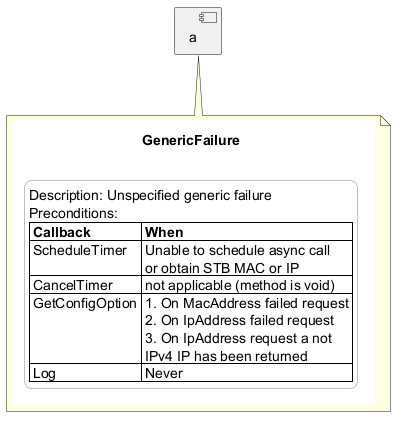

@startuml
component a as a {
}
note bottom of a
{{
skinparam componentBorderColor teal
title GenericFailure
skinparam note {
BackgroundColor white
BorderColor silver
}
skinparam legend {
BackgroundColor white
BorderColor silver
}
legend
Description: Unspecified generic failure
Preconditions:
|= Callback |= When |
| ScheduleTimer | Unable to schedule async call \n or obtain STB MAC or IP |
| CancelTimer | not applicable (method is void) |
| GetConfigOption | 1. On MacAddress failed request \n 2. On IpAddress failed request \n 3. On IpAddress request a not \n IPv4 IP has been returned |
| Log | Never |
end legend
}}
end note
@enduml